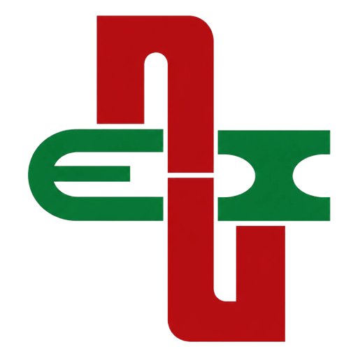

Eliana Isbarbo Gfeller
Escribana Pública
Agendate desde el celular
Ahora podés agendar tu turno de forma rápida y sencilla desde nuestra página web.
¿Cómo hacerlo?
- Entrá aescribaniaisbarbo.com.uy/reservar
- Elegí el día y el horario.
- Completá tus datos y confirmá.
Importante A partir del martes 1 de diciembre, la atención por la mañana será solo con agenda previa.